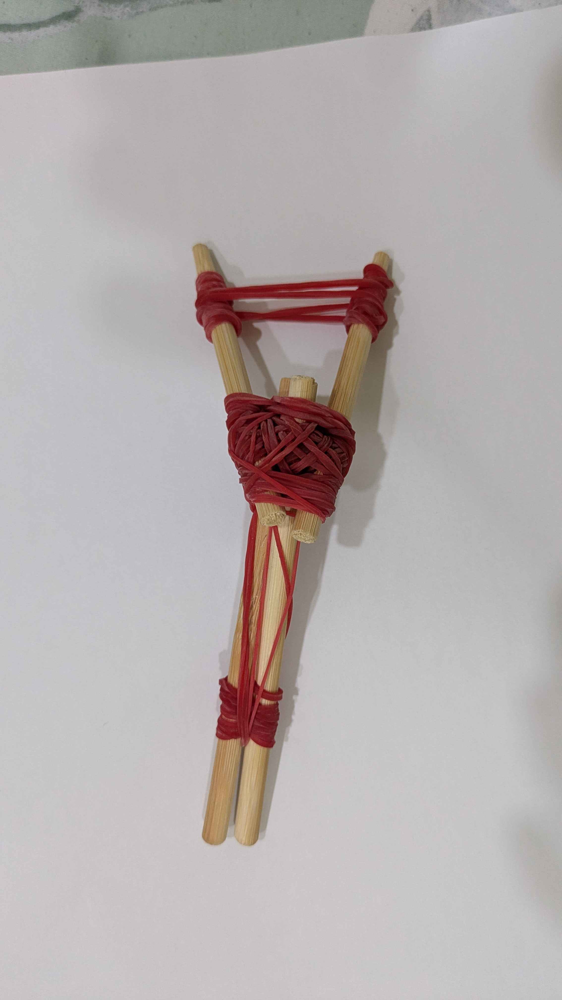

從童軍關卡開始
五年級時的一次童軍活動，讓他第一次接觸竹筷子槍製作。那天之後，竹筷、橡皮筋和各種小材料，就變成他放學後最愛研究的零件。

About the maker
五年級時的一次童軍活動，讓他第一次接觸竹筷子槍製作。那天之後，竹筷、橡皮筋和各種小材料，就變成他放學後最愛研究的零件。
今年 3 月到台北 fun-maker 體驗橡皮筋槍，買回作品後，他開始拆解、觀察、重組，想知道每一段張力與每一個卡榫是怎麼運作的。
他做出多款竹筷子橡皮筋槍，有的能一次裝多發再一發一發射出，有的不用棘輪，只靠橡皮筋配置完成連續發射。
What makes it different
這些作品保留竹筷子的粗獷手作感，也把孩子反覆測試出的結構巧思留下來。每一條橡皮筋不是裝飾，而是支撐、蓄力、釋放或定位的一部分。

Gallery
先以第一批作品建立展示頁，未來可以逐步補上名稱、價格、庫存、測試影片與蝦皮連結。
連發概念
以多組橡皮筋支撐上下結構，適合展示多發裝填與張力路徑。紅色與綠色橡皮筋讓功能線路更容易被觀察。

長距離
長身比例搭配橡皮筋蓄力，主打穩定握持與射程表現。
高辨識
用不同顏色標示功能線路，讓結構觀察更直覺。

輕量
尺寸較短，操作快速，適合入門體驗與近距離靶紙遊戲。

收藏
密集固定的核心區域帶有強烈手作視覺，適合做故事款展示。

進階
長槍身與包覆式前段，適合放在蝦皮商品頁作為進階款主圖。
Safety kit
預計每包包含橡皮筋槍本體、外包裝、安全同意書、護目鏡與簡易操作說明。銷售對象以熟識同學與家長知情購買為優先，並清楚標示使用規則。
House rules
Join or order
歡迎同學、家長、手作同好一起交流。蝦皮上架前，可先登記想看的款式；正式販售時會提供款式照片、價格、安全說明與出貨內容。